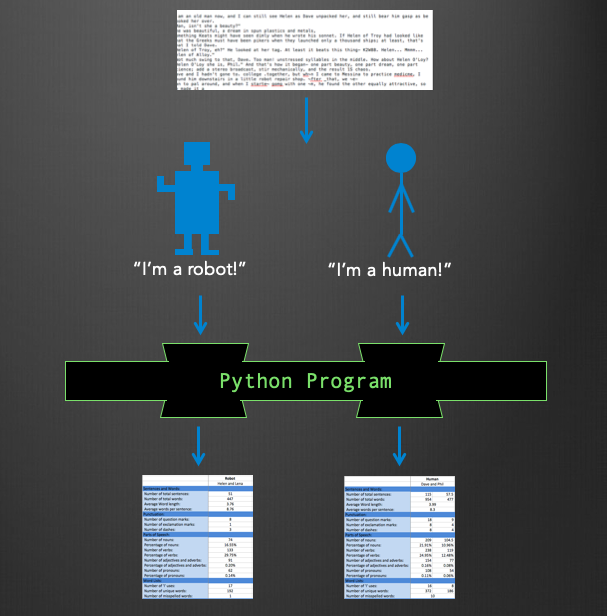
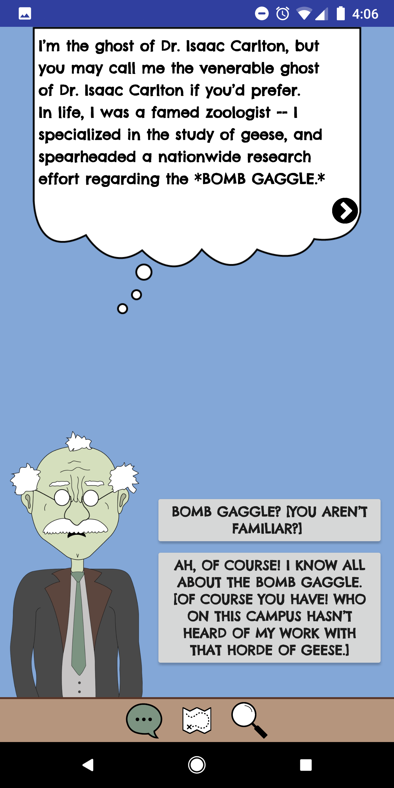
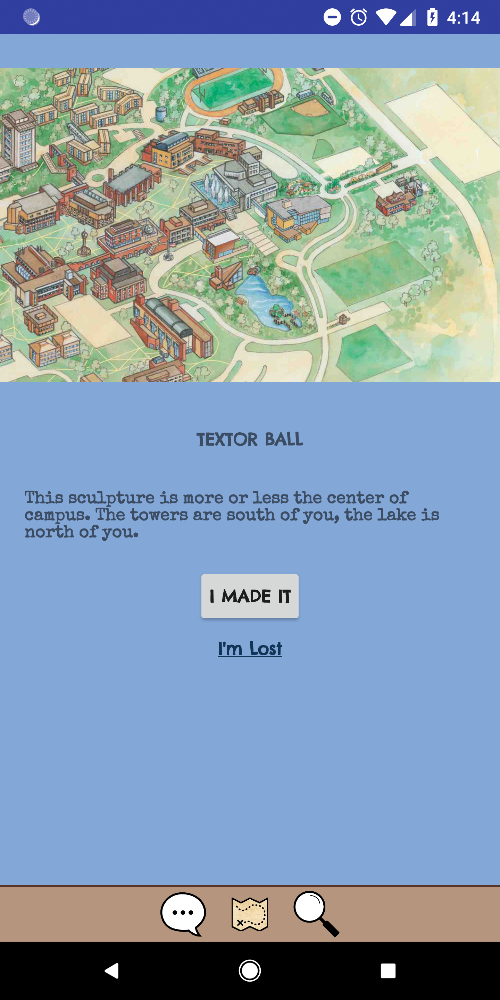

Experience and Skills
Listed below is information about some of my projects, skills, and work experience.
Information Technology Competency Study GuideAugust 2019 - OngoingIncoming master’s students in the University of North Carolina Chapel Hill School of Information and Library Science have the opportunity to take a three-part online test to complete their Information Technology Competency Requirement. While the test encourages students to teach themselves the skills, use outside resources, and continue to resubmit until they pass the exam, there are few updated resources available to assist with the process. This project created an online learning module that provides students with self-guided lessons and external resources in order to help them learn the skills necessary to pass the test. The overarching goal of the project was to lower the barrier of entry for incoming master’s students to teach themselves technology skills and improve their digital literacy. See the study guide here. |
Digital Humanities Collaborative of North CarolinaSeptember 2018 - Ongoing
|
Digital Pedagogy Community of PracticeOctober 2018 - May 2020UNC’s Libraries facilitate communities of practice to help create library communities discuss prominent topics and connect groups of people working on similar projects. I started the Digital Pedagogy Community of Practice with Sarah Morris at the beginning of the fall 2018 semester, and now run communications, facilitate advertising, and choose topics for the discussion. Meeting once every month, the community of practice is creates the space and materials for discussion so that the group can talk about issues surrounding teaching with and about technology. Here is a list of our previous topics:
|
Information Literacy Classes (ENGL 105)September 2018 - April 2020UNC Chapel Hill requires each first-year student to take an introductory research and writing course (ENGL 105) which often includes a library information session. At the instructor's request, librarians and library students come into classes and teach one or more sessions on library resources, research strategies, and workshop topics or keywords with students. I teach and co-teach these sessions, tailoring each lesson to fit the assignments and needs of the professor and incorporating active learning techniques. This includes attending a pedagogy discussion group that focuses on teaching skills with digital tools and structuring learning goals within the ACRL framework. |
Community Workshop SeriesSeptember 2018 - OngoingThe Community Workshop Series is a partnership between the UNC Information and Library Science school and the public libraries of Chapel Hill, Carrboro, and Durham. The workshop series offers classes to community members on basic computer skills. Class topics include basic computer skills, email, word, excel, health literacy, social media use, and more. I volunteered as a "floater" in these classes several times over each semester, providing assistance to the leader of the session and giving one-on-one help to students who needed it. The classes I have helped with a variety of classes, including "Email Basics" and "Microsoft Excel Basics" at the Carrboro Cybrary and the Chapel Hill Public Library. |
"Artificial Eloquence: Artificial Eloquence: Computer-Based Analysis of Human and Robotic Dialogue"August 2017 - May 2018 Graphic describing the project's methods "Artificial Eloquence: Artificial Eloquence: Computer-Based Analysis of Human and Robotic Dialogue" is my senior honors thesis at Ithaca College, advised by Katherine Kittredge and John Barr. The project explores the difference in dialogue between artificial intelligence characters and human characters in science fiction short stories from the 20th century. I wrote a program in Python that gathers the data about each text's characters (average word length, average sentence length, part of speech usage, common words, and more) that I use to do a literary analysis on each story. I presented my work at the International Conference for the Fantastic in the Arts, and received the "Best Humanities and Sciences Presentation" award at the Ithaca College Whalen Symposium. See the Python program and the accompanying modified text files on GitHub (clairecahoon) |
"The Inexplicably Curious Case of the Murder of Dr. Isaac Carleton": A Mixed Reality GameApril - May 2018  Screenshots of gameplay |
Copyright Archives Project - Library of CongressJune - August 2017I was a Library of Congress Junior Fellow in the summer of 2017. I worked within the U.S. Copyright Office in the Office of Public Information and Education with George Thuronyi sorting and organizing archival material for a public display. I worked through over 2000 artifacts from the Copyright archives from the late 19th and early 20th century and assessed each one for historical value and potential inclusion in a public display about the Copyright Office. At the end of the summer, I submitted my findings and the metadata for each artifact to be used for the eventual display and wrote a blog post: "Copyright Creativity, Then and Now". I also presented my work in a Junior Fellows showcase, which included several interesting board game and gaming objects that had been submitted for copyright in the early 20th century. Throughout my time at the Library of Congress, I attended events, lectures, tours, training sessions, classes, and spoke with current librarians in order to gain as much knowledge as I could about the workings of the Library of Congress and its library staff. |